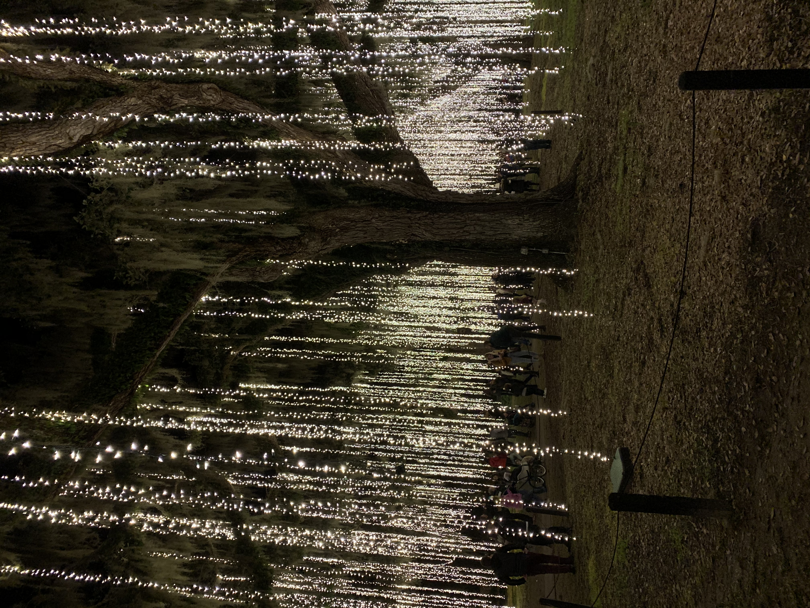
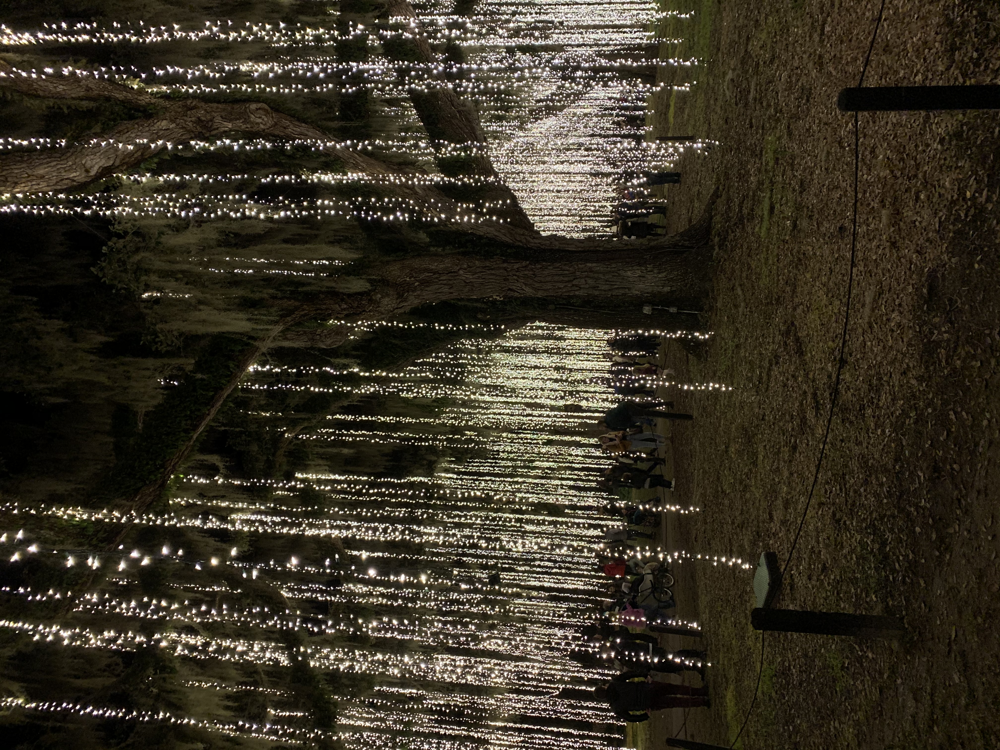
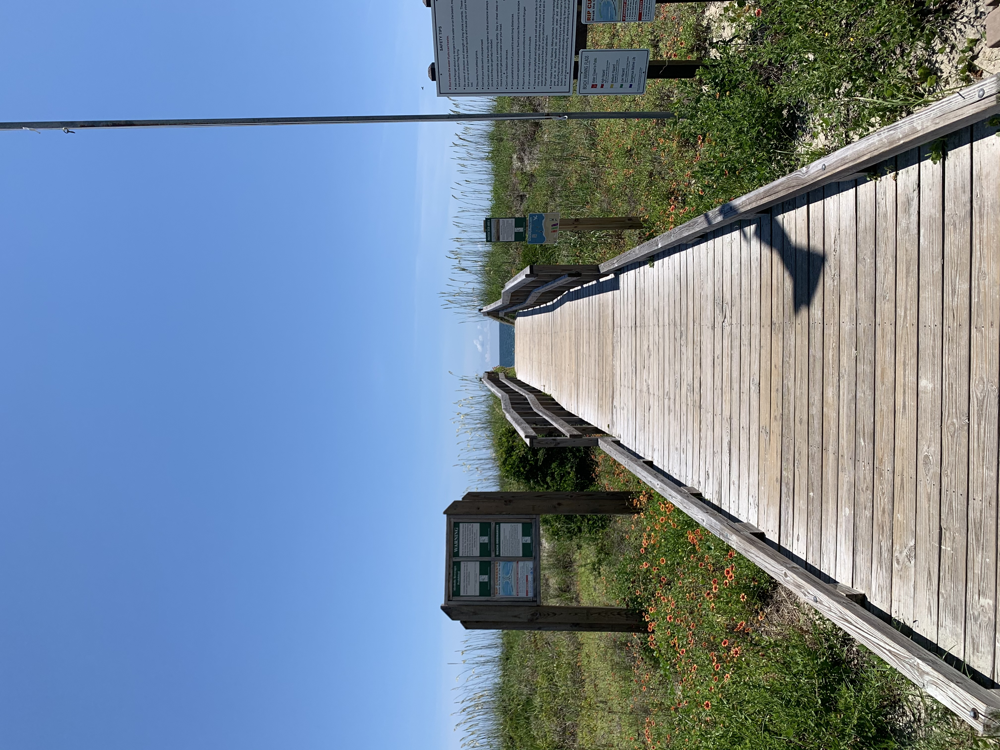
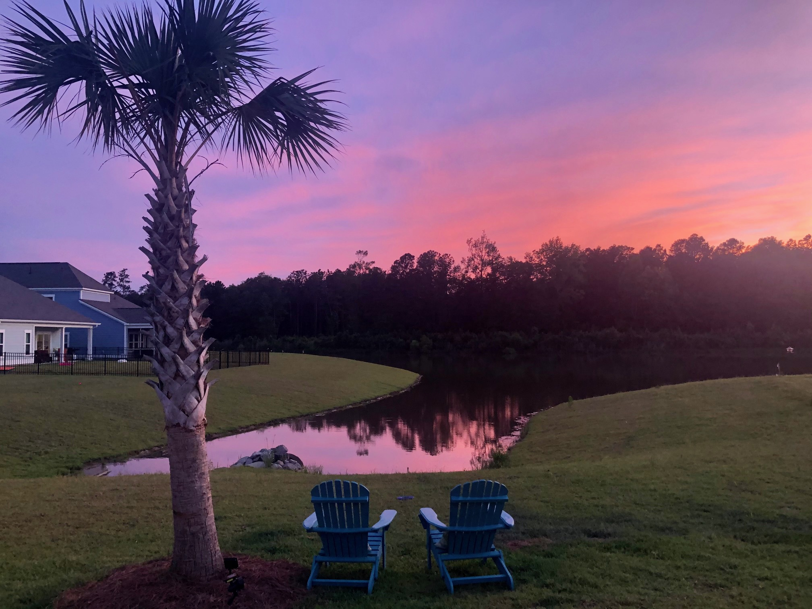
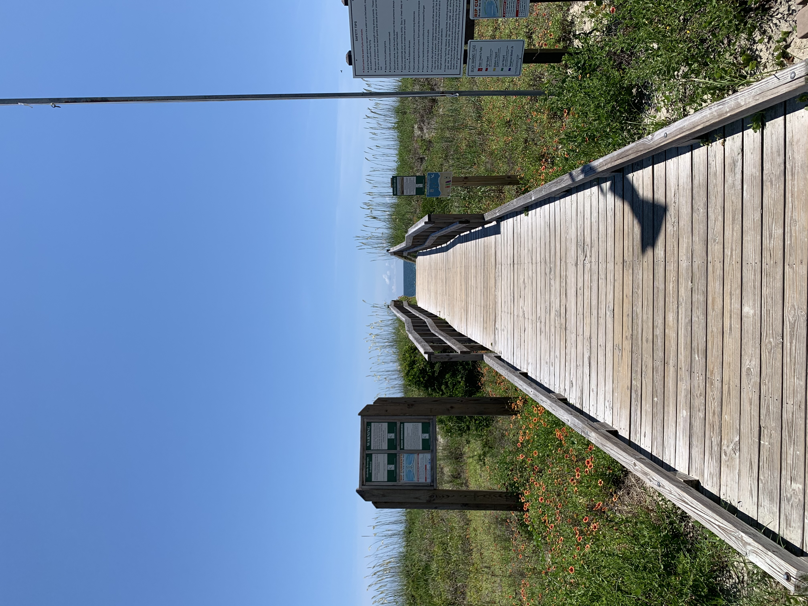
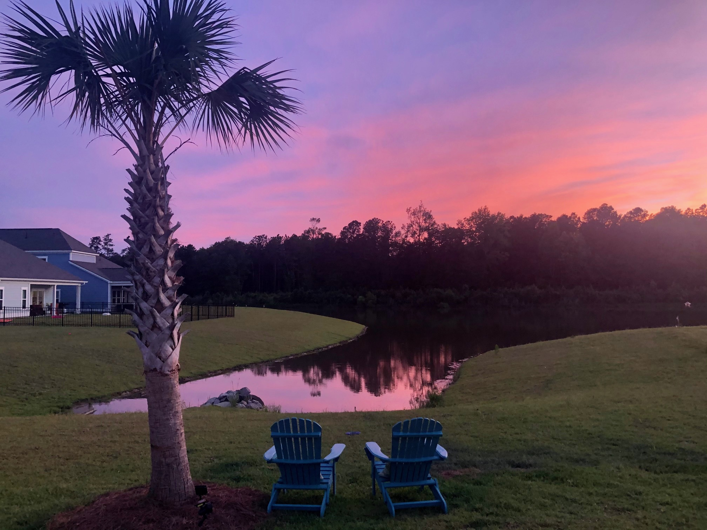

My most newly established home is Myrtle Beach, South Carolina. My family moved here about 2 years ago, so I've spent time with them in Myrtle Beach whenever I haven't been in school. Known moreso as a tourist destination, Myrtle Beach actually has several rapidly expanding residential areas. Unfortunately, since I haven't spent a ton of time there, I don't have many pictures of the area. However, it's a beautiful area situated about 5 minutes from the beach. There's a great shopping and eating area called Market Commons, and an amusement park of sorts called Broadway at the Beach, both situated very close by. There's also an area called Brookgreen Garden that has a beautiful light exhibition, which I have one picture of below!
 

 


